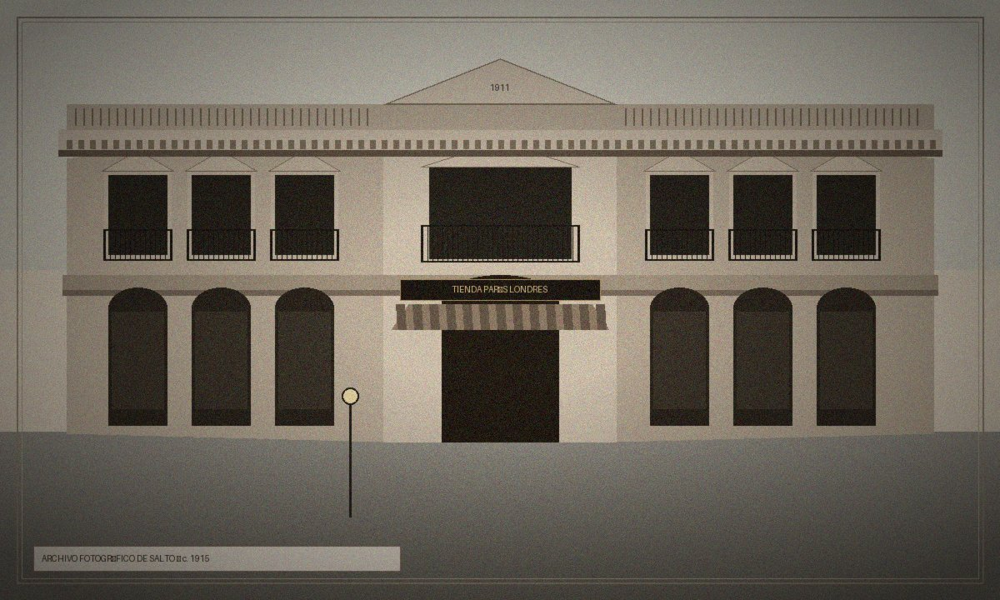
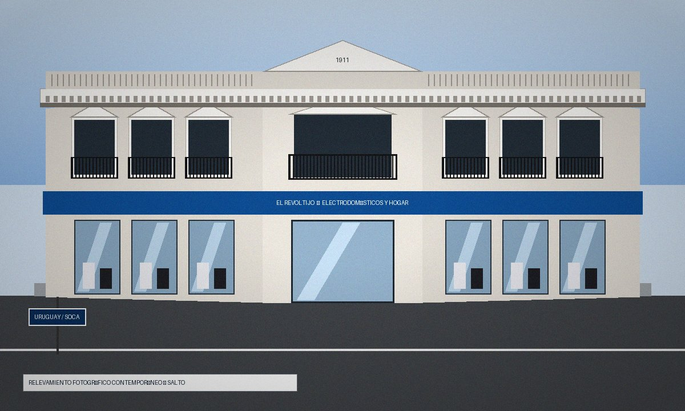
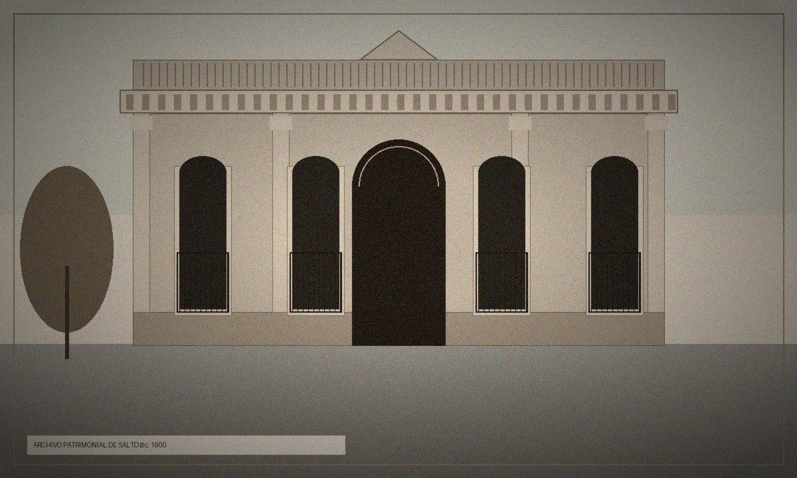
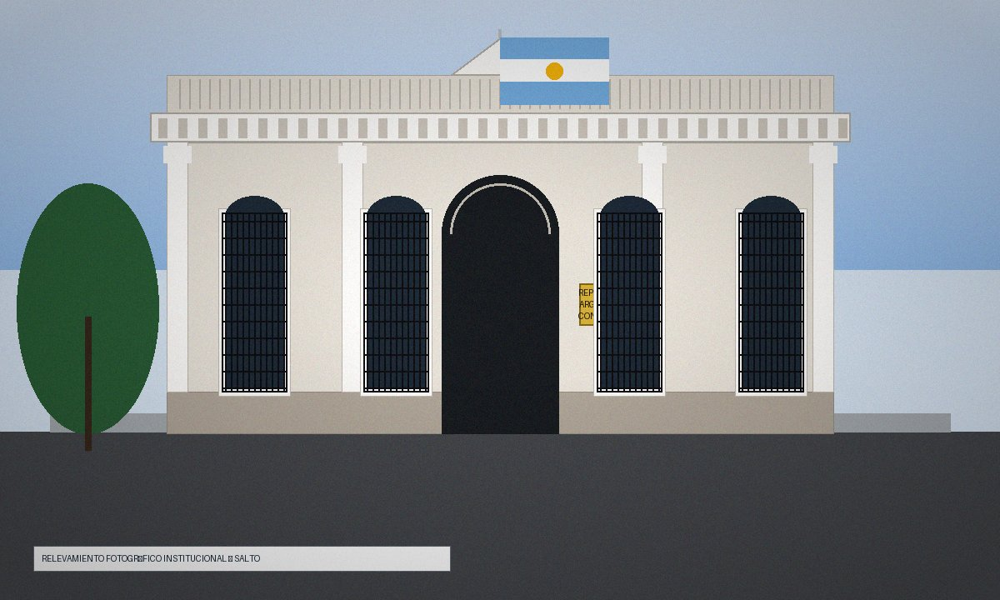

Patrimonio de Salto · Guion de recorrido
Guion de recorrido patrimonial · Palacio Gallino (comercial) y Consulado Argentino
Adaptación narrada de las Fichas Arquitectónicas Patrimoniales (Salto, setiembre de 2026), que se apoyan en la Guía del Salto: urbanístico, arquitectónico y artístico (FARQ-UdelaR, 2010) y en la Guía de Recursos Patrimoniales de Salto (2025). Está escrita para leerse o narrarse en voz alta, de pie en la vereda: cada parada lleva unos 4 a 5 minutos.
Cómo leer las referencias a las imágenes. La figura X.1 es el registro de época y la X.2 el estado actual (son las ilustraciones de las fichas originales; la versión PDF las incluye). Donde dice «en la imagen», se señala solo lo que se ve en ellas; lo demás hay que verlo en la calle.
Salto, República Oriental del Uruguay · Setiembre de 2026
| Dónde | Calle Uruguay 891, esquina Dr. Juan Carlos Soca |
|---|---|
| Cuándo | Obras terminadas en 1911 (el año está en el frontón) |
| Quién lo encargó | Familia Gallino |
| Autor | No figura en el relevamiento |
| Qué fue / qué es | Tienda departamental «París Londres» → hoy «El Revoltijo Electrodomésticos» |
| Tipo y estilo | Edificio de renta con planta baja comercial · eclecticismo comercial clásico |
| Contexto urbano | Calle Uruguay, el eje cívico-comercial de Salto, dentro del área de protección patrimonial |
(Si pueden, crucen a la vereda de enfrente, en diagonal a la esquina, para verla de frente.)
Estamos en Uruguay y Dr. Soca, en plena calle Uruguay, el eje donde se cruzan el comercio y la vida cívica de Salto. Lo primero que ve cualquiera hoy es un negocio: el cartel y las vidrieras de «El Revoltijo», electrodomésticos. Es lo más fácil de mirar y, justamente por eso, lo que menos nos cuenta.
Así que les propongo un truco: no empiecen por el cartel. Empiecen por la esquina.
Fíjense que el edificio no dobla en ángulo recto: la esquina está cortada en diagonal. Eso se llama ochava, y tiene dos razones. Una práctica: la normativa urbana pedía visibilidad en los cruces. Y otra comercial: la ochava convierte la esquina en la entrada principal, le da presencia, y ensancha un poco el espacio del peatón para que pueda frenar a mirar las vidrieras con comodidad. Es una esquina diseñada para que la gente se detenga.


Ilustraciones de las fichas originales.
Ahora sí, tomen las dos imágenes: a la izquierda el registro de época (Fig. 1.1), a la derecha el estado actual (Fig. 1.2). En las dos, la esquina es el eje: la puerta abajo, el remate triangular arriba. Vamos a leer el edificio en tres miradas.
Primera mirada: abajo, donde cambió todo. En la imagen de época, miren la marquesina que cubre la entrada y las vidrieras: ahí estaba el letrero de la tienda «París Londres». Pasen ahora a la imagen actual: una vidriera moderna, de vidrios amplios, y un cartel corrido de «El Revoltijo» que recorre todo el frente. Cambió el vidrio, cambió la marquesina, cambió el cartel. Pero no cambió la idea: la planta baja sigue siendo una gran vitrina pensada para que la calle se asome adentro.
Segunda mirada: arriba, donde casi no cambió nada. Levanten la vista, que acá está lo mejor y casi nadie lo hace. Comparen las dos imágenes: de la planta alta para arriba son prácticamente la misma. Busquen los balcones de hierro forjado; los ventanales altos y verticales, cada uno con su pequeño remate triangular y sus molduras; y más arriba la cornisa, apoyada en unos adornos que parecen sostenerla (se llaman ménsulas), con un pretil de balaustres por encima.
Y un detalle para sorprender a los que van con ustedes: esa fachada que parece de piedra es, en realidad, ladrillo macizo asentado a la cal, con perfiles de hierro por dentro y un revoque exterior que imita la piedra.
Tercera mirada: la firma. Sigan subiendo hasta el remate triangular, sobre la esquina. Ahí está esculpido el año 1911, cuando terminaron las obras. Un cartel se cambia en una tarde; un año esculpido en el remate se queda.
Imaginen esta esquina a comienzos del siglo XX. Salto vivía una etapa de prosperidad económica, y este edificio fue el corazón de ese auge comercial. Acá funcionaba «París Londres», una tienda departamental, y para la época era una novedad absoluta: todo bajo un mismo techo. No se venía solo a comprar, se venía a pasear. La sociedad salteña llegaba por telas europeas, prendas de alta confección, perfumería y artículos de lujo para el hogar. Con ese nombre, la tienda no necesitaba explicar qué prometía: Europa, a la altura de la calle Uruguay.
El edificio estaba pensado para eso. Abajo, un salón amplio y continuo, con columnas y vigas de hierro en lugar de muros divisorios, para que la mercadería se viera de punta a punta. Arriba, los depósitos de la mercadería importada y las oficinas de administración. Por eso se lo clasifica como edificio de renta: nació para producir, no solo para lucirse.
Después, el giro. A mediados del siglo XX el comercio cambió, la tienda cerró sus puertas y el edificio pasó a «El Revoltijo», que instaló acá su casa central de electrodomésticos. Miren qué buen hilo se sigue: ayer lo que se exhibía era el lujo importado para vestirse y para la casa; hoy, el equipamiento del hogar moderno. Cambió la mercadería, pero el edificio siguió cumpliendo su destino de siempre: ser un comercio con vida.
Ahora una aclaración que conviene hacer acá, porque en Salto se confunde seguido. Este es el Palacio Gallino comercial, Uruguay 891: la tienda. Otra cosa distinta es la residencia señorial de la misma familia, en Uruguay 1067: una casona de 1925 remodelada por el ingeniero Luis F. Gallino, que hoy aloja el Museo de Bellas Artes «María Irene Olarreaga Gallino» y es Monumento Histórico Nacional. Misma familia y misma calle, pero dos edificios y dos funciones: uno para comerciar, otro para vivir. Si buscan el museo, no es acá: cambia el número.
Hoy el edificio conserva íntegras su estructura, sus pisos superiores y su remate; solo la planta baja se adaptó al comercio actual. Y ahí está su valor: es un testimonio de cómo Salto quería verse a inicios del siglo XX, moderna, cosmopolita y próspera. La ciudad no lo guardó como pieza de museo: lo conservó trabajando.
| Dónde | Calle Gral. José Artigas 1162, acera sur, frente a Plaza Artigas |
|---|---|
| Cuándo | Fines del siglo XIX – inicios del XX |
| Quién lo encargó / autor | No figuran en el relevamiento (casona de familia acomodada salteña) |
| Qué fue / qué es | Residencia señorial urbana unifamiliar → hoy sede consular de la República Argentina |
| Estilo | Clasicismo historicista italianizante |
| Contexto urbano | Área tutelada de Plaza Artigas |
| Jurisdicción consular | Salto, Artigas y Rivera |
Estamos en Artigas 1162, en la vereda sur, frente a Plaza Artigas. Antes de mirar el edificio, miren la plaza: ella explica la casa.
Porque la pregunta es: ¿por qué una casa tan elegante acá, y no abajo, cerca del puerto? La respuesta está en el río. Hacia fines del siglo XIX, las epidemias y las crecidas periódicas del Uruguay empujaron a las familias acomodadas a dejar el bajo portuario y subir a las cotas altas de la cuchilla. La plaza, que entonces se llamaba Plaza 18 de Julio, pasó a ser el nuevo sector residencial distinguido. Esta casa es consecuencia de esa mudanza: familias que subieron para vivir a salvo del agua.
Ahora sí, den media vuelta y miren el frente.


Ilustraciones de las fichas originales.
El hilo conductor de este edificio es la simetría. Hagan el ejercicio: tracen una línea imaginaria por el centro de la puerta. Lo que ven a la izquierda lo ven igual a la derecha. Ese orden estricto es el clasicismo de aire italiano, el lenguaje de las casas de las familias importantes del novecientos: una casa seria, ordenada, respetable.
Tomen las dos imágenes: la de época (Fig. 2.1) y la actual (Fig. 2.2). En la primera hay una casa de familia, con su puerta, sus ventanales, sus pilastras y su cornisa. En la segunda es la misma casa, con algunos agregados que cuentan que cambió de oficio. Vamos de a una cosa.
La puerta. Un arco de medio punto, o sea un semicírculo perfecto, con molduras. Y arriba una banderola de hierro: ese calado en forma de abanico por donde entra la luz. Detrás de esa puerta hay un zaguán con zócalos de mármol, el pasillo de entrada que funcionaba como filtro de privacidad entre la calle y la intimidad de la casa. Después, una cancela de hierro forjado, un vestíbulo y los patios interiores, que daban luz y ventilación a las habitaciones.
Los ventanales. Cuenten: cuatro, dos a cada lado de la puerta. Altos, verticales, con las jambas y los dinteles moldurados, y entre ellos pilastras con capiteles trabajados (columnas planas, pegadas al muro, que marcan el ritmo). Cada ventanal está protegido por herrería artesanal.
El remate. Suban hasta arriba: una cornisa con dentículos, esos bloquecitos en fila, apoyada en ménsulas, y un pretil que esconde la azotea tradicional. Por eso la casa termina en una línea limpia.
Lo nuevo. Ahora busquen lo que la imagen de época no tiene. Junto al portal, el escudo, la placa de bronce de la Cancillería argentina. Y arriba, sobre la cornisa, el mástil con la bandera. Dos señales y alcanzan: la fachada sigue hablando de casona señorial, pero sus signos ya son diplomáticos. A eso se suman las rejas de seguridad que se ven en la imagen actual.
Concordia está enfrente, del otro lado del río. La relación entre Salto y la costa entrerriana fue, a lo largo de los siglos, una hermandad social, económica y familiar: es lo que podemos llamar una frontera activa, una frontera que se usa, que conecta más de lo que separa.
Por eso hay un consulado. Según el relevamiento, los antecedentes de la representación consular argentina en Salto se remontan a 1857, bajo la Confederación Argentina, con capital en Paraná, y es una de las más antiguas de Argentina. Hoy su jurisdicción cubre Salto, Artigas y Rivera.
¿Y por qué en esta casa? Porque sus ambientes son amplios, con techos de más de cuatro metros, y se adaptaron de forma natural a despachos y salas de espera. Una casa hecha para recibir visitas pasó a recibir público.
Hoy está en excelente estado: conserva sus carpinterías de madera noble con postigos, sus rejas artesanales y sus molduras, por fuera y por dentro, integrada al área protegida de Plaza Artigas. Y eso es lo que hay para llevarse: la casa cambió de oficio, no de rostro. Un uso nuevo y digno mantuvo viva una pieza de arquitectura civil de fines del siglo XIX, ahora al servicio de la integración entre las dos orillas.
Dos esquinas de Salto, dos maneras de ser ciudad: la vidriera y el zaguán, el edificio que se muestra al peatón y el que protege la intimidad. Y un mismo movimiento de fondo: una ciudad que va cambiando de oficio sus edificios sin perderles la cara.